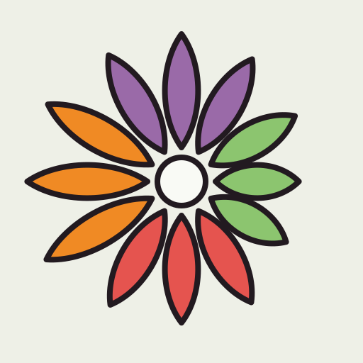
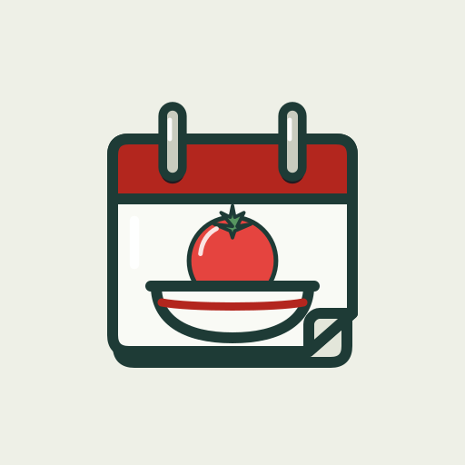
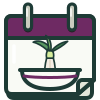
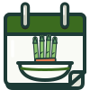
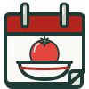

Icône et emblème
La feuille du mois
Une page d’éphéméride : le bandeau prend la couleur de la saison, le produit de saison est servi dans un bol. La saison et la recette, rien de plus. Même trait que les illustrations des légumes.


60 px
Rail, en sombre
PhotosPlansMétéoNotes
MusiqueDe saisonHorlogeRéglages
Sous l’icône, le nom court « De saison ». L’icône d’écran d’accueil garde la tomate d’été, la plus lisible en petit. Dans l’app, la feuille suit la saison : en haut du rail sur tablette, et sur l’écran de lancement, où la page de la saison passée se tourne.
Dans l’app, la feuille suit la saison


